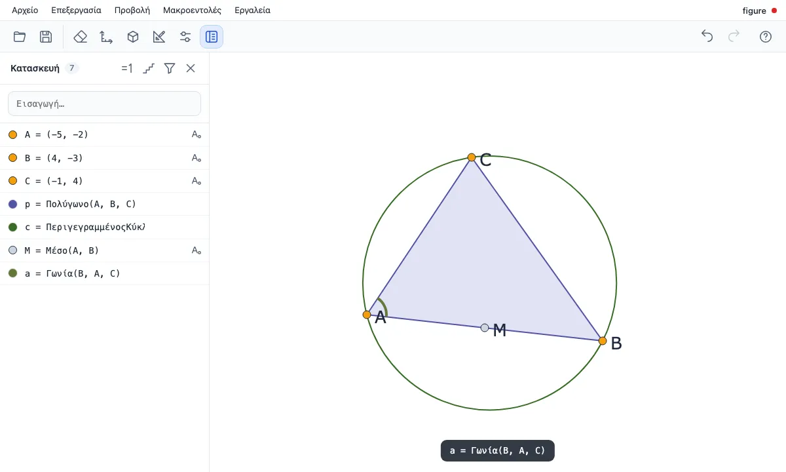

Το περιβάλλον εργασίας

Η γραμμή ενεργειών
| Κουμπί | Ρόλος | |
|---|---|---|
| Άνοιγμα |
.dgo, .dgp,
.ggb
|
|
| Αποθήκευση | σε .dgo |
|
| Γόμα | απόκρυψη ή εμφάνιση αντικειμένων (γόμα) | |
| Σύστημα αξόνων | άξονες και πλέγμα· σε 3D, τρίεδρο και δάπεδο | |
| Προβολή 3D | μετάβαση στον χώρο ή επιστροφή στο επίπεδο (3D) | |
| Ιδιότητες | δεξί πλαίσιο (ιδιότητες) | |
| Κατασκευή | αριστερό πλαίσιο | |
| Αναίρεση, Ακύρωση αναίρεσης | Ctrl Z, Ctrl Shift Z ή Ctrl Y | |
| Εγχειρίδιο χρήσης | ανοίγει το εγχειρίδιο στη γλώσσα του DocGeo, σε νέα καρτέλα |
Στο κέντρο, η ζώνη περιβάλλοντος δίνει το όνομα και τις ενέργειες του επιλεγμένου αντικειμένου.
Το πλαίσιο «Κατασκευή»
-
Μία γραμμή ανά αντικείμενο, με τη σειρά της κατασκευής:
M = Μέσο(A, B). Κάθε γραμμή τροποποιείται (επαναορισμός). - Η κουκκίδα στην αρχή της γραμμής κρύβει ή εμφανίζει το αντικείμενο· το στο τέλος της γραμμής εμφανίζει το όνομά του.
- Κεφαλίδα: πλήθος αντικειμένων, τιμές, βήμα προς βήμα, νέο πρόγραμμα.
- Γραμμή εισαγωγής «Εισαγωγή…» και κουμπί του μενού εργαλείων.
- Όταν ο δείκτης περνά πάνω από μια γραμμή, το αντικείμενο λάμπει, και αντίστροφα.
Η υπόδειξη
Το συννεφάκι στο κάτω μέρος του σχήματος δείχνει τι αναμένεται («Επιλέξτε ένα σημείο»), τη γραμμή που θα γράψει το εργαλείο και τα λάθη με κόκκινο. Το ✕ του εγκαταλείπει το τρέχον εργαλείο.
Πλοήγηση
| Ενέργεια | Χειρονομία |
|---|---|
| Μετακίνηση της προβολής | σύρσιμο κενού σημείου· δεξί κουμπί οπουδήποτε |
| Ζουμ | ροδέλα ή επιφάνεια αφής, γύρω από τον δείκτη |
| Περιστροφή σχήματος 3D | δεξί κουμπί, ή ένα δάχτυλο σε κενό σημείο |
| Προοπτική, δάπεδο (3D) | P, S |
Το στρογγυλό κουμπί κάτω αριστερά, που υπάρχει όταν το σχήμα περιέχει κινήσεις, τις σταματά προσωρινά ή τις ξαναξεκινά.
Αναίρεση
Κάθε τροποποίηση είναι ένα βήμα μιας ενιαίας στοίβας: κατασκευή, διαγραφή, μετακίνηση, στυλ, ρύθμιση του συστήματος συντεταγμένων, μετάβαση σε 3D. Το ζουμ, η μετακίνηση και η περιστροφή της προβολής δεν είναι.
Τα πλαίσια
- Η εσωτερική τους άκρη σύρεται για να αλλάξει το μέγεθός τους· ένα διπλό κλικ επαναφέρει το προεπιλεγμένο πλάτος.
- Κάτω από 900 px πλάτος, μόνο ένα πλαίσιο είναι ανοιχτό κάθε φορά· στα 600 px και κάτω, το πλαίσιο «Κατασκευή» ξεκινά κλειστό, οι ιδιότητες καλύπτουν το σχήμα και η επιλογή εργαλείου κλείνει τα πλαίσια.